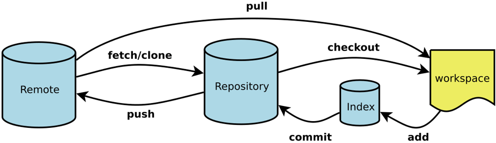
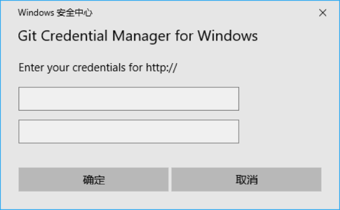

Base Of Git

Change User
1 | git config user.name # show current user name |
Add Remote Repository
1 | git remote -v # show current repository |
Add Local Respository
1 | cd /home/user/project-1/src |
Workspace To Stage
1 | git add [FileName1] [FileName2] ... # add file to stage |
Stage To Repository
1 | git commit -m "NecessaryRemarks" # commit projects to local respository, which have been in stage |
Respository To Remote
1 | git push [RemoteName] [BranchName] # push projests from local respository to remote |
Push project from respository which on Windows system to one remote first, you'll meet the follow window.

Remote To Respository
1 | git fetch [RomoteName] |
Resposity To Stage
1 | git reset HEAD [FileName] # use project which in resposity replace project which in stage |
Stage To Workspace
1 | git checkout [FileName] # use project which in stage replace project which in workspace |